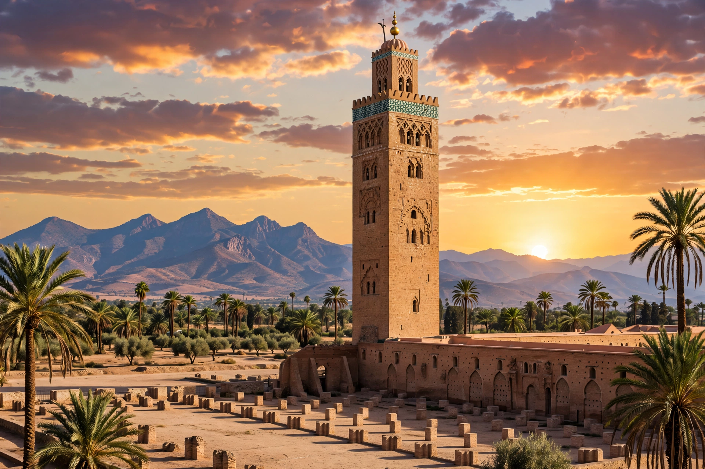

| Koutoubia Mosque | |
|---|---|
 | |
| Location | Marrakech, Morocco |
| Completed | c. 1190s (Almohad period) |
| Minaret height | 77 m |
The Koutoubia Mosque (from kutubiyyin, "booksellers," for the manuscript market once nearby) is the largest mosque in Marrakech, Morocco, and a landmark of Almohad architecture.
Begun under Abd al-Mu'min after 1147 and rebuilt — the first mosque's qibla alignment proved incorrect — it was completed under Yaqub al-Mansur. Its 77-metre sandstone minaret, decorated with carved bands and topped by gilded copper orbs, became the model for the Giralda in Seville and the Hassan Tower in Rabat. The prayer hall has 112 columns in a T-plan typical of Almohad mosques.
The mosque remains in use for worship; non-Muslims may not enter but the minaret dominates the medina skyline and the surrounding gardens.